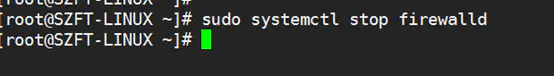
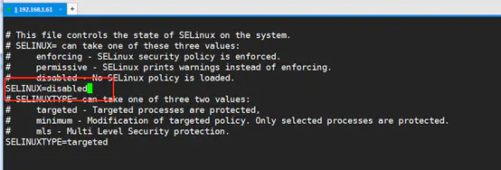
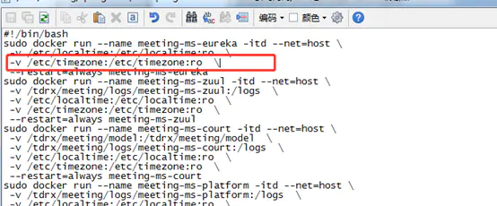
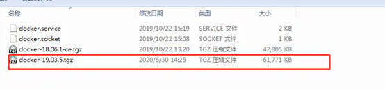
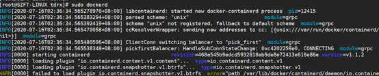
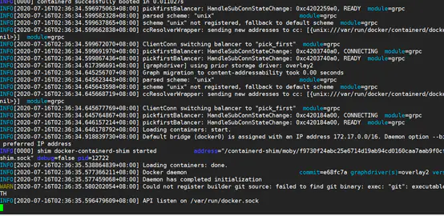
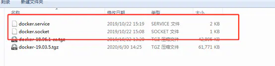

容器化部署¶
1. 引言¶
本文档针对需要使用容器化来进行部署的项目使用，在一些部署环境中必须通过镜像+挂载空磁盘的部署情况，无法将配置文件和证书放置到容器环境中，可通过开启环境变量配置模式的方式，来启动平台，方便此类环境的节点部署，本文档将介绍如何进行环境变量部署。
2.安装docker¶
【如客户方提供服务器已有docker服务则可以跳过此章节，直接阅读第2.2章节】
Docker离线安装部署文档
文档基于centos 7.5; docker 19.03.5
1. 准备linux环境
1.1 先关闭防火墙 sudo systemctl stop firewalld

1.2 关闭selinux策略 vi /etc/selinux/config 修改完成后，重启一次系统；可以使用reboot

1.3 检查文件 检查是否存在/etc/timezone文件，如果没有，在后面执行 docker run 命令的时候，需要删除命令中关于/etc/timezone 的映射，以免报错，只使用/etc/localtime 做时间同步。

准备工作完成。
2. 安装docker
如果没有安装包，在官网下载二进制安装包,下载地址https://download.docker.com/linux/static/stable/x86_64/

下面只需要安官网的步骤执行就可以了，官网安装网址https://docs.docker.com/engine/install/binaries/
就下面这三步：
2.1 解压：tar xzvf docker-19.03.5.tgz
2.2 拷贝： sudo cp docker/* /usr/bin/
2.3 运行： sudo dockerd &。
这一步可以不用后台执行，即直接执行sudo dockerd，命令行界面会直接打印执行结果，查看执行结果。


如果没有异常，按 ctrl + c 强制退出，Docker 其实已经安装好了，后面会配置开机启动。
3. 配置docker开机启动
这里包括两个文件（强调一下必须先执行1.2步骤，即关闭selinux，并且重启了系统）

docker.service
[Unit]
Description=Docker Application Container Engine
Documentation=https://docs.docker.com
After=network-online.target firewalld.service
Wants=network-online.target
[Service]
Type=notify
# the default is not to use systemd for cgroups because the delegate issues still
# exists and systemd currently does not support the cgroup feature set required
# for containers run by docker
ExecStart=/usr/bin/dockerd
ExecReload=/bin/kill -s HUP $MAINPID
# Having non-zero Limit*s causes performance problems due to accounting overhead
# in the kernel. We recommend using cgroups to do container-local accounting.
LimitNOFILE=infinity
LimitNPROC=infinity
LimitCORE=infinity
# Uncomment TasksMax if your systemd version supports it.
# Only systemd 226 and above support this version.
#TasksMax=infinity
TimeoutStartSec=0
# set delegate yes so that systemd does not reset the cgroups of docker containers
Delegate=yes
# kill only the docker process, not all processes in the cgroup
KillMode=process
# restart the docker process if it exits prematurely
Restart=on-failure
StartLimitBurst=3
StartLimitInterval=60s
[Install]
WantedBy=multi-user.target
docker.socket:
[Unit]
Description=Docker Socket for the API
PartOf=docker.service
[Socket]
# If /var/run is not implemented as a symlink to /run, you may need to
# specify ListenStream=/var/run/docker.sock instead.
ListenStream=/run/docker.sock
SocketMode=0660
SocketUser=root
SocketGroup=docker
[Install]
WantedBy=sockets.target
执行下列命令，设置docker开机自启；在docker.service， docker.socket所在的文件夹中执行下命令，设置docker开机自启。
sudo cp docker.socket /etc/systemd/system sudo cp docker.service /etc/systemd/system sudo systemctl daemon-reload sudo systemctl start docker sudo systemctl enable docker
重启一下系统，检验docker是否开机自启
sudo reboot
重启成功后，执行docker ps 检验docker是否启动成功。
到这里docker已经安装完成，并且开机自启。
2.1 安装docker-compose¶
# 如服务器无外网则可以在电脑浏览器中先下载好而后上传服务器/usr/local/bin/docker-compose目录 curl -L https://get.daocloud.io/docker/compose/releases/download/1.29.1/docker-compose-`uname -s`-`uname -m` > /usr/local/bin/docker-compose # 给docker compose 目录授权 sudo chmod +x /usr/local/bin/docker-compose # 将文件软链到/usr/bin/目录下cp /roo ln -s /usr/local/bin/docker-compose /usr/bin/docker-compose # 查看一下version，显示有版本号那就说明安装成功了 docker-compose version
2.2 部署容器¶
1.拉取镜像
具体版本镜像请询问@汪剑锋或者@相关对接人员
docker pull harbor.hyperchain.cn/hyperchain/hyperchain@sha256:4b9a33331c4a98943a476a3f6ad38f763598445a77dafcd0f631ff72e6d50dd7
2.创建目录（所有节点在同一台服务器的话需要分别创建对应的节点目录）
mkdir ~/hyperchain/
3.写入部署包
上传deploy.tar.gz tar -xvf deploy.tar.gz -C ~/hyperchain/
4.上传LICENSE文件
//外部人员可通过内部工作人员签发拿到License文件 //压缩包中解压出的license文件需要重命名为LICENSE并放到~/hyperchain/目录 mv 20221119@.LICENSE ~/hyperchain/LICENSE
5.docker-compose.yml
vim docker- compose.yml
version: '3' networks: mynet1: ipam: config: - subnet: 172.19.0.0/24 services: hyperchain1: image: 6d73921dbb35 container_name: hyperchain1 networks: mynet1: ipv4_address: 172.19.0.2 ports: - "8081:8081" - "50011:50011" - "12001:12001" volumes: - ~/hyperchain/node1/configuration:/opt/hyperchain/configuration - ~/hyperchain/node1/namespaces:/opt/hyperchain/namespaces - ~/hyperchain/node1/system:/opt/hyperchain/system - ~/hyperchain/node1/tls:/opt/hyperchain/tls - ~/hyperchain/LICENSE:/opt/hyperchain/LICENSE working_dir: /opt/hyperchain/ entrypoint: ./hyperchain start restart: always hyperchain2: image: 6d73921dbb35 container_name: hyperchain2 networks: mynet1: ipv4_address: 172.19.0.3 ports: - "8082:8081" - "50012:50011" - "12002:12001" volumes: - ~/hyperchain/node2/configuration:/opt/hyperchain/configuration - ~/hyperchain/node2/namespaces:/opt/hyperchain/namespaces - ~/hyperchain/node2/system:/opt/hyperchain/system - ~/hyperchain/node2/tls:/opt/hyperchain/tls - ~/hyperchain/LICENSE:/opt/hyperchain/LICENSE working_dir: /opt/hyperchain/ entrypoint: ./hyperchain start restart: always hyperchain3: image: 6d73921dbb35 container_name: hyperchain3 networks: mynet1: ipv4_address: 172.19.0.4 ports: - "8083:8081" - "50013:50011" - "12003:12001" volumes: - ~/hyperchain/node3/configuration:/opt/hyperchain/configuration - ~/hyperchain/node3/namespaces:/opt/hyperchain/namespaces - ~/hyperchain/node3/system:/opt/hyperchain/system - ~/hyperchain/node3/tls:/opt/hyperchain/tls - ~/hyperchain/LICENSE:/opt/hyperchain/LICENSE working_dir: /opt/hyperchain/ entrypoint: ./hyperchain start restart: always hyperchain4: image: 6d73921dbb35 container_name: hyperchain4 networks: mynet1: ipv4_address: 172.19.0.5 ports: - "8084:8081" - "50014:50011" - "12004:12001" volumes: - ~/hyperchain/node4/configuration:/opt/hyperchain/configuration - ~/hyperchain/node4/namespaces:/opt/hyperchain/namespaces - ~/hyperchain/node4/system:/opt/hyperchain/system - ~/hyperchain/node4/tls:/opt/hyperchain/tls - ~/hyperchain/LICENSE:/opt/hyperchain/LICENSE working_dir: /opt/hyperchain/ entrypoint: ./hyperchain start restart: always
6.创建并启动容器
##在docker-compose.yml文件同级目录执行, ##创建并启动节点容器 docker-compose -f docker-compose.yml up -d ##注意不要重复执行此命令，如需要删除节点执行 docker-compose -f docker-compose.yml down
7.重启容器
docker-compose -f docker-compose.yml stop docker-compose -f docker-compose.yml start
注意：部分配置项在节点执行过程中会被程序改写，如果不清楚改写后的内容，建议在启动成功后，不在使用之前配置的环境变量内容，下次重启时只在环境变量中配置需要修改的配置内容。